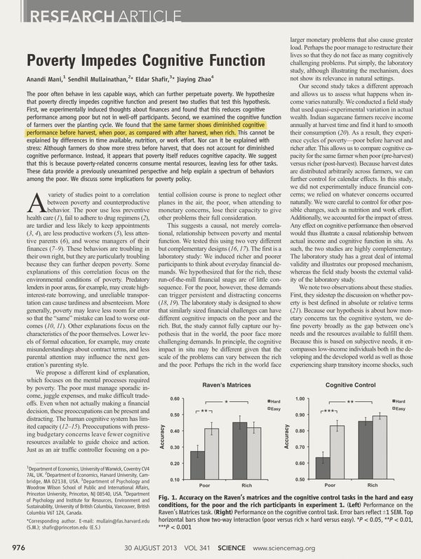
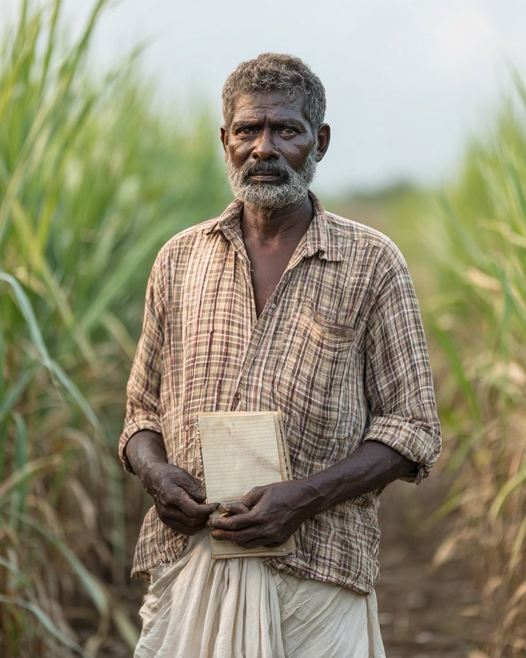
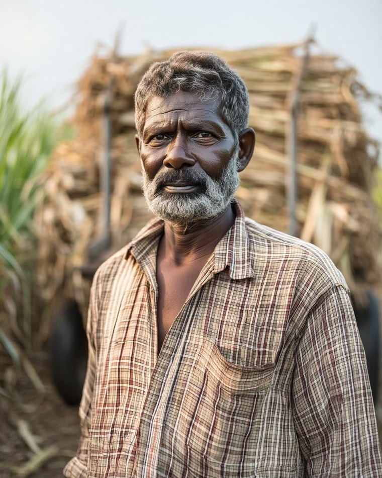

Does low productivity create poverty, or does poverty create low productivity?

Science, 30 August 2013. Mani et al., “Poverty Impedes Cognitive Function”. Highlighted: the main finding.
The same farmer scores lower when he is poor
464 small sugarcane farmers in 54 villages, Tamil Nadu, India.
Each farmer was tested twice in 2010: before and after the harvest payment.

Before harvestmoney has run out

After harvestpaid for the crop
Has a loan
99%
13%
Pawned goods in the last 15 days
78%
4%
Raven's test score logic puzzles, out of 10
4.35
5.45
Attention test Stroop, seconds to finish
146
131
Attention test Stroop, number of errors
5.93
5.16
After the payment: Raven's score 25% higher, attention test 15 seconds faster.
The gap is not explained by
FoodFarmers did not eat less before harvest: Rs2,663 vs Rs2,592 a month (2009 pilot, 188 farmers).
Physical workSame result for farmers who had finished harvesting but were not yet paid.
StressHeart rate and blood pressure were higher before harvest, but controlling for them does not change the result.
Like losing a full night of sleepAbout 13 IQ points. The farmer effect is three quarters of the laboratory effect.
Social protection is an investmentPoverty uses up mental capacity. Long forms and interviews use up more of it (p. 980). Registration for the poor should be simple.
Source: Mani, A., Mullainathan, S., Shafir, E. and Zhao, J. (2013). Poverty impedes cognitive function. Science 341: 976–980. Field study pp. 978–979 and Table 1; food data from the 2009 pilot, p. 979; effect size and policy pp. 979–980.
Photos are AI-generated illustrations (Midjourney), not study participants.